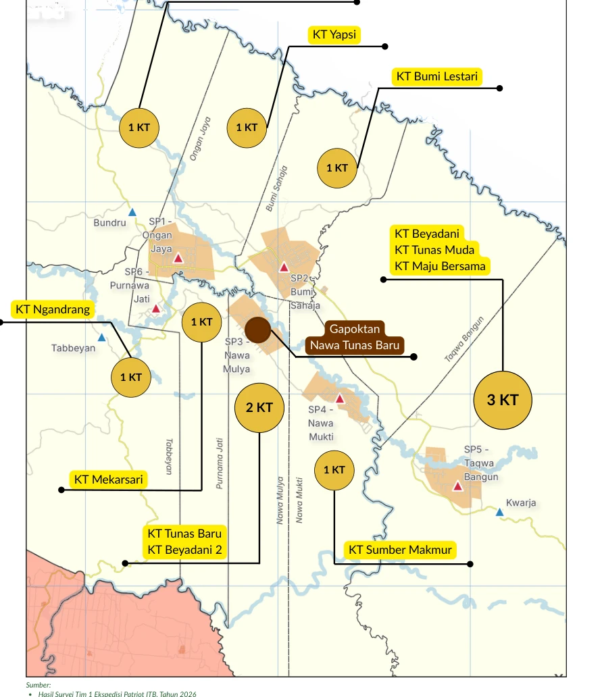

Persemaian / nursery
Pembibitan dan pemeliharaan tanaman muda sebelum dipindahkan ke kebun.
Pengelolaan kawasan melibatkan pemerintah distrik dan kampung, masyarakat adat, petani, kelompok usaha, penyuluh, serta instansi teknis. Pemerintahan kampung dan kepemimpinan adat memiliki peran yang saling berkaitan, terutama dalam pengambilan keputusan dan pengelolaan lahan.
Pengembangan agropolitan membutuhkan kerja sama untuk menghubungkan produksi, pendampingan, pembiayaan, pengolahan, dan pemasaran. Penguatan kelembagaan ekonomi diarahkan untuk meningkatkan kemampuan pengelolaan usaha, membangun standar mutu bersama, serta memperkuat posisi tawar petani. Pemerintah, masyarakat adat, perguruan tinggi, dan mitra usaha dapat mendukung proses tersebut sesuai perannya.
Tantangan kawasan meliputi keterbatasan infrastruktur, akses sarana produksi dan pembiayaan, pemanfaatan lahan yang belum optimal, persoalan legalitas lahan, serta pengolahan dan pemasaran hasil yang belum kuat. Pada komoditas kakao, peningkatan produktivitas dan konsistensi mutu menjadi kebutuhan penting.
Peluang pengembangan terletak pada potensi komoditas lokal, pengalaman masyarakat dalam bertani, dan penguatan hubungan antara sentra produksi dengan pusat pelayanan. Arah pengembangan agropolitan Lereh dapat difokuskan pada perbaikan budidaya kakao, fasilitas fermentasi dan pengeringan bersama, pemasaran kolektif, peningkatan keterampilan masyarakat, serta tata kelola yang melibatkan pemerintah, masyarakat adat, petani, dan mitra usaha.
Pembibitan dan pemeliharaan tanaman muda sebelum dipindahkan ke kebun.
Wadah penanganan biji basah untuk mendukung pembentukan mutu.
Pengeringan biji dengan perlindungan dari hujan dan kebersihan yang terjaga.
Penyimpanan hasil dalam kondisi bersih, berventilasi, dan terlindung sebelum dijual.
Jenis sarana yang dikenalkan dalam playbook. Ketersediaan dan layanan penggunaannya perlu dikonfirmasi kepada pengelola.
Belajar melalui pengalaman anggota lain, pendampingan, dan praktik bersama di kebun.
Kerja bersama dapat mendukung perawatan kebun, sambung tanaman, panen, dan penanganan pascapanen.
Kelompok membantu pertukaran informasi sarana, pelatihan, pembeli, dan peluang kemitraan.
GNTB diperkenalkan dalam playbook sebagai penghubung kelompok tani dan pengembangan biji kakao premium terfermentasi. Perannya mencakup pembelajaran, penguatan jejaring, serta pengembangan kakao agroforestri dan diversifikasi berkelanjutan.
| Wilayah | Kelompok tani |
|---|---|
| Ongan Jaya (SP 1) | Yapsi |
| Bumi Sahaja (SP 2) | Bumi Lestari |
| Nawa Mulya (SP 3) | Beya Dani II; Nawa Tunas |
| Nawa Mukti (SP 4) | Sumber Makmur |
| Takwa Bangun (SP 5) | Tunas Muda |
| Purnawa Jati (SP 6) | Mekarsari |
| Bundru – Sarwa Jaya | Wahana Kakao |
| Seebum, Distrik Kaureh | Tunas Baru |

Peta dokumen dari playbook; berbeda dari batas wilayah interaktif pada halaman Peta Kawasan.